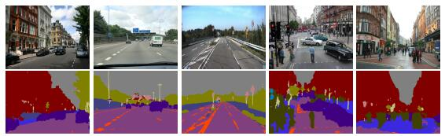
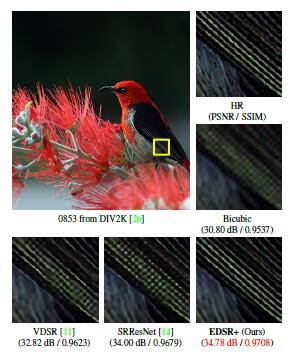

Many natural problems in computer vision are instances of dense prediction. The goal is to compute a discrete or continuous label for each pixel in the image. A prominent example is semantic segmentation, which calls for classifying each pixel into one of a given set of categories. Semantic segmentation is challenging because it requires combining pixel-level accuracy with multi-scale contextual reasoning.

Person re-identification (re-ID) is usually viewed as an image retrieval problem, which matches pedestrians from different cameras or across time using a single camera. Given a person-of-interest (query), person re-ID determines whether the person has been observed by another camera.
The recovery of a high resolution (HR) image or video from its low resolution (LR) counter part is topic of great interest in digital image processing. This task is referred as super-resolution (SR) problem.

Generative models provide a principled approach to unsupervised learning. A perfect model of natural images would be able to optimally predict parts of an image given other parts of an image and thereby clearly demonstrate a form of scene understanding.
FMM is one of ten most important algorithm in 20 century, it reduce the calculate cost from 2N to N and is extremely efficient for large N.
The important Reading Materials for FMM:
I write a note for Fast Multipole Method to explain most important details about FMM method. If you are confused by FMM method, this note may help you to catch the most important conceptions.
For our paper:
Order O(1) algorithm for first-principles transient current through open quantum systems
You also can refer this note for details:
Fast Calculate for Evolution Operators